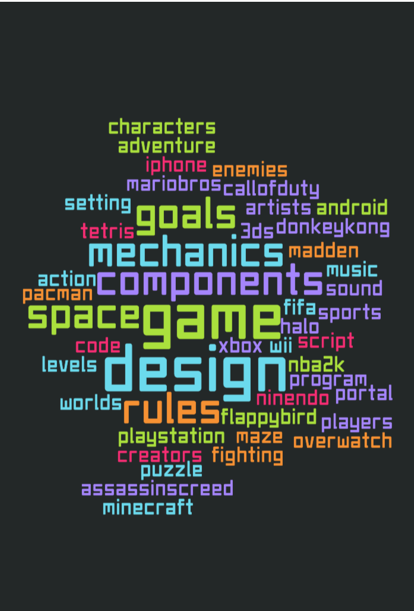

Game design is all about story telling. It is a field drawn from computer science, programming, graphic design, and creative writing. Explore this website to about the parts of the game that need to be designed, why students should be taught game design, why students like game design, and see some examples of student designed games!
Example of a game made with Scratch